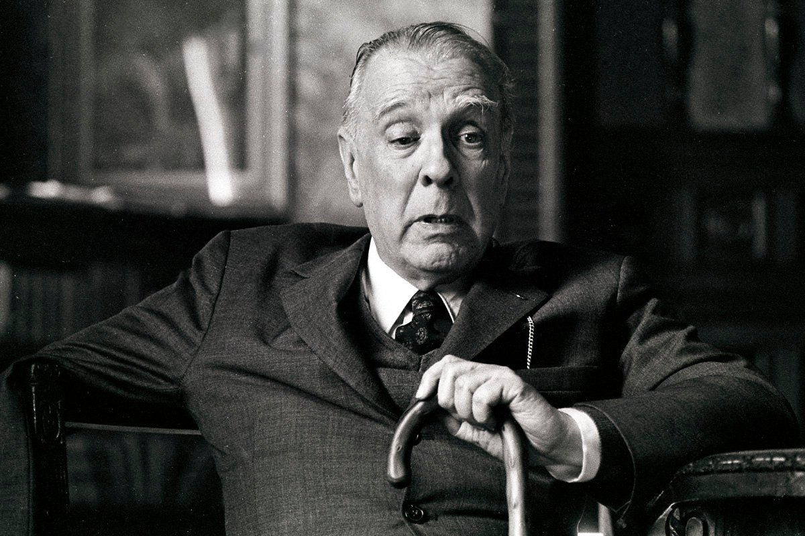

Emma Zunz
Jorge Luis Borges
Información general

Jorge Luis Borges nació en Buenos Aires el 24 de agosto de 1899. Murió en junio 14 de 1986 en Suiza. Publicó muchos ensayos, poemas y manifiestos. En 1923, publicó su primer libro que contenía un volumen de poemas. En 1935 superó su miedo por escribir pura ficción y publicó la Historia universal de la infamia. Además fue un bibliotecario en Buenos Aires, conferenciante y profesor de literatura inglesa. También fue un miembro de la Academia Argentina de Letras. En 1961, recibió el Premio Formentor con su compañero Samuel Beckett. Este premio fue una colaboración por el trabajo de editor. En 1969, recibió el premio Miguel de Cervantes.
Su estilo de escritura
- Posee una estética estructurada.
- Utiliza la eficacia y la economía del léxico.
- Utiliza una narrativa doble. Te presenta un evento en donde se esconde otra que es menos explícita.
- Interpretación de conceptos y movimientos de espacio, destino y realidad.
- Desplazamiento en lo que era el género detectivesco. Hay una influencia de William Shakespeare.